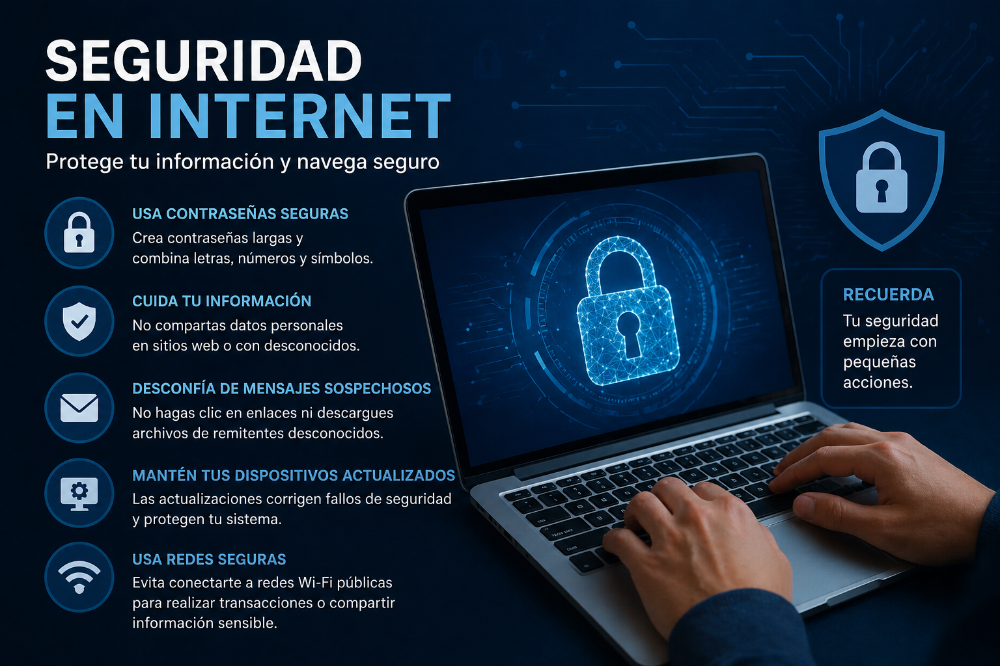

CONSEJOS SOBRE SEGURIDAD

ATAQUES:
• Virus, malware y otros softwares maliciosos. Se trata de software que puede provocar daños en el equipo, añadir publicidad no deseada, robar información o convertirlo en un equipo que se utilizará para realizar nuevos ataques o cometer delitos sin que el usuario lo sepa.
• Phishing: Es un caso concreto de suplantación de identidad. Los ciberdelincuentes envían un mensaje haciéndose pasar por un servicio legítimo. En él, con alguna excusa, se solicitan los datos de usuario y contraseña, para capturarlos y suplantar al usuario.
ACOSO Y ABUSO EN INTERNET:
• No participes nunca en actividades que incluyan conductas de este tipo, ni siquiera como espectador. Ponlas en conocimiento de un adulto responsable.
• No difundas nunca material de otras personas, protegido por la LOPD, aunque tú no seas el autor. Es un delito.
• Si recibes contenido inadecuado, tuyo o de otra persona, ponlo en conocimiento de tus padres, tu tutor, un profesor de confianza u otro adulto responsable.
• No cedas nunca a ningún chantaje que puedas recibir.
• No envíes a nadie información ni contenido tuyo que no quieres que se conozca. Desde el momento en que lo envías o lo publicas pierdes el control de ese contenido, y eliminarlo de Internet es muy difícil.